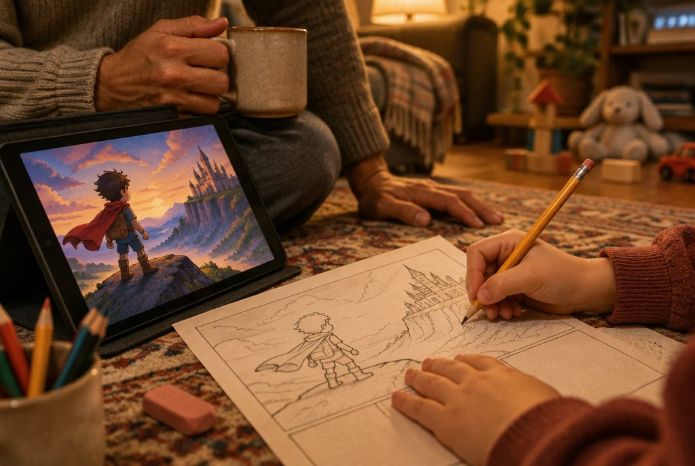
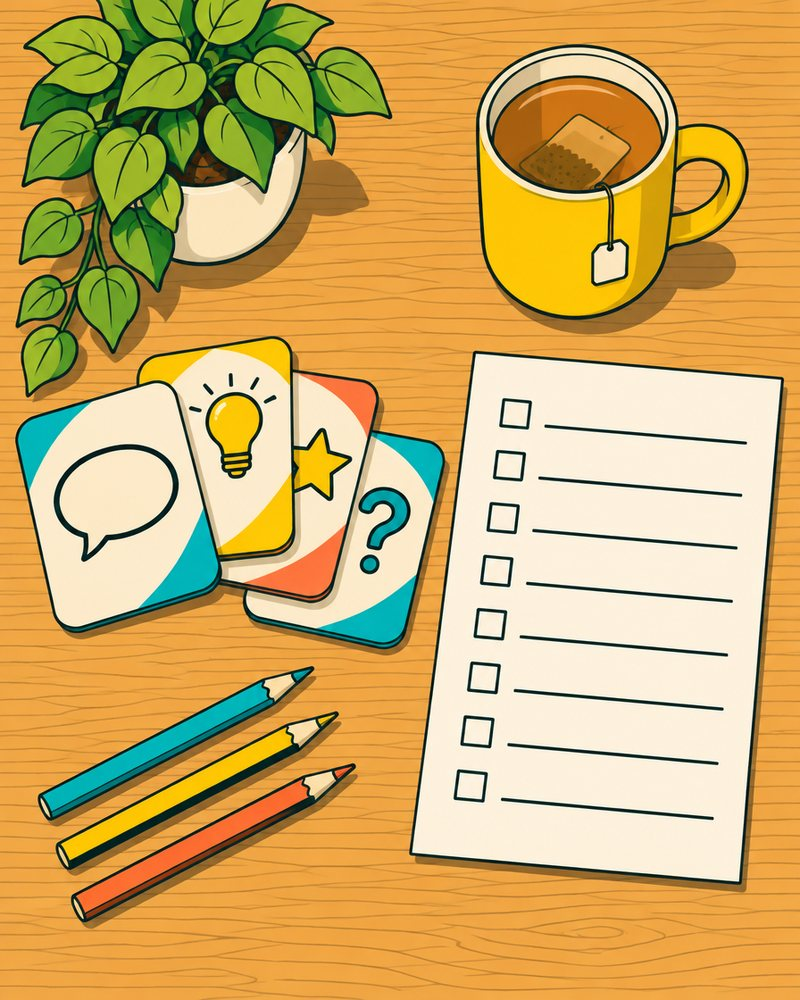

Prompten lernen
Wie stellt man einer KI eine gute Frage? Mit einfachen Bausteinen, die schon Achtjährige verstehen.
Dein Kind fragt längst ChatGPT, Gemini & Co. Hier lernst du, wie ihr das zusammen richtig gut macht – in kurzen Videos und mit Vorlagen für den Küchentisch.
Über die Risiken von KI liest man jeden Tag. Über das, was Kinder damit Spannendes lernen können, viel zu selten. Genau darum geht es hier.
Kinder, die gute Fragen stellen, bekommen bessere Antworten – von Menschen genauso wie von einer KI. Wer lernt, eine Aufgabe klar zu beschreiben, Antworten zu prüfen und nachzuhaken, lernt dabei etwas fürs Leben. Das kann man üben, am besten zusammen.
Bei KIdsklug bekommst du dafür konkretes Handwerkszeug: Beispiele zum Nachmachen, Ideen für Schule und Freizeit und die wichtigsten Einstellungen, damit du entspannt bleiben kannst.
Wie stellt man einer KI eine gute Frage? Mit einfachen Bausteinen, die schon Achtjährige verstehen.
KI als Lernpartner statt Lösungsautomat: Vokabeln abfragen, Referate vorbereiten, Erklärungen verstehen.

Geschichten erfinden, Comics zeichnen, Quizze bauen – Projekte, bei denen die Familie gemeinsam tüftelt.
Dein Kind soll ein Referat über Delfine halten. So unterschiedlich kann die Frage an die KI klingen:
„Schreib mir was über Delfine.“
Die KI weiß nicht, wer fragt, wofür und wie lang. Heraus kommt ein langer Text, den dein Kind kaum versteht und am Ende einfach abschreibt.
„Ich bin 10 und halte ein Referat über Delfine. Erklär mir in fünf einfachen Sätzen, wie Delfine schlafen. Stell mir danach drei Quizfragen dazu.“
Jetzt ist klar, wer fragt, worum es geht und was herauskommen soll. Und die Quizfragen sorgen dafür, dass dein Kind selbst nachdenkt.

Wir arbeiten gerade an Vorlagen zum Ausdrucken, mit denen ihr direkt loslegen könnt:
Abonniere den Kanal, dann bekommst du mit, sobald es losgeht.
KIdsklug auf YouTube